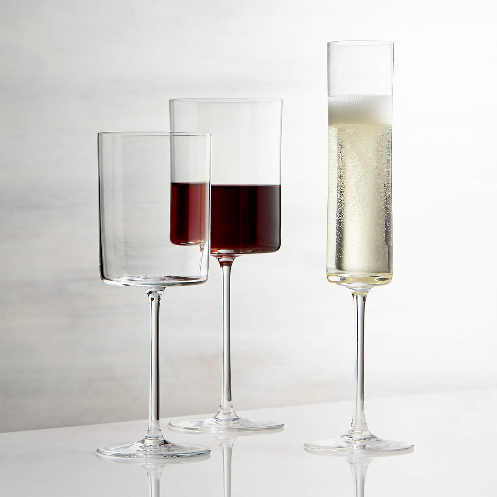

Ti viene sete.
E allora devi scegliere se bere dalla bottiglia o trovare altre soluzioni.
Poi se hai una bottiglia ma siete in due a bere è un problema, e allora che fai?
Jemplâ la tace di aghe, di vin o altri, baste che non bevi a sclips.

Eh sì, son belli. Ben detto.
Sono così belli che spesso ti chiedono dove li hai presi. Così abbiamo pensato di rendere disponibile anche un visualizer online per capire quali possono essere i tuoi preferiti.

Però sbrigati. Ne abbiamo pochi.
I nostri bicchieri sono fabbricati a mano dalle mani dei nostri artigiani. Ogni pezzo è curato in dettaglio ed unico. Non perdere l'occasione.